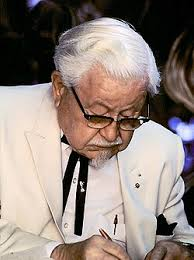

<!DOCTYPE html>
<html lang="th">

<head>
  <meta charset="UTF-8">
  <meta name="viewport" content="width=device-width, initial-scale=1.0">
  <title>ชื่อหน้าเว็บ</title>
</head>

<body>
</body>
</html>

<body>
  <header>
    <h1 style="font-size: 3em;">เรื่องราวเบื้องหลังความอร่อย</h1>
    <h1 style="font-size: 1em;">KFC ถือกำเนิดขึ้นจากผู้พันแซนเดอร์ส (Colonel Sanders) ผู้คิดค้นสูตรไก่ทอดที่ใช้สมุนไพรและเครื่องเทศ 11
         ชนิดในปี 1940 เรื่องราวของเราคือความมุ่งมั่นที่จะรักษาคุณภาพและรสชาติที่เป็นเอกลักษณ์นี้ไว้ เพื่อให้ทุกชิ้นของไก่ทอด KFC คือการส่งมอบความสุขและความทรงจำที่ดีแก่ลูกค้าทุกคน</h1>
  </header>
  <picture>
    <source media="(min-width:650px)" srcset="Picture/colonel.png">
    <source media="(min-width:465px)" srcset="Picture/colonel.png">
    
  </picture>
 <h1 style="font-size:1em;">ชื่อ: Colonel Sanders</h1>
 <h1 style="font-size:1em;">ตำแหน่ง: ผู้ก่อตั้งและแรงบันดาลใจ</h1>
 <h1 style="font-size:1em;">คำอธิบายสั้น ๆ: ชายผู้เชื่อมั่นในสูตรลับจนวินาทีสุดท้าย และทำให้ไก่ทอดของเขากลายเป็นปรากฏการณ์ระดับโลก</h1>
